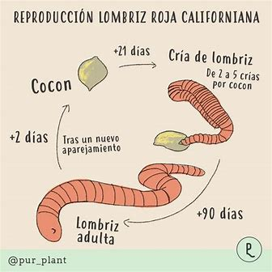

La lombricultura es una práctica sostenible que promueve la reducción de residuos, mejora
la calidad del suelo y contribuye a una agricultura más ecológica. Además, es una actividad
relativamente sencilla que puede llevarse a cabo tanto a pequeña escala en hogares o huertos urbanos.
Preparación del Contenedor : Escoge un recipiente con ventilación y drenaje.
Sustrato : Llénalo con tierra y materiales como hojas secas o cartón humedecido.
Agregar Lombrices : Introduce lombrices rojas californianas ( Eisenia fetida )
Alimentación : Agrega restos vegetales y cáscaras de huevo. Evita carnes, lácteos y cítricos.
Mantenimiento : Asegura humedad y buena ventilación. La temperatura ideal es de 15-25 °C.
Recolección del Humus : En 2-3 meses, retira el humus, que tendrá una textura suelta y color oscuro.
Reducir residuos orgánicos.
Enriquece el suelo de forma natural.
Es un método sencillo para obtener fertilizante orgánico de alta calidad.
 Volver a inicio